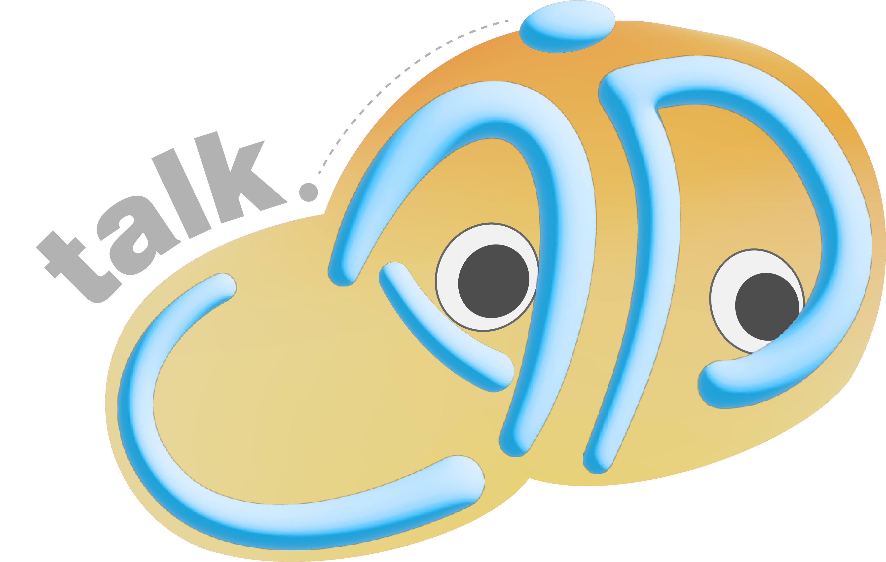
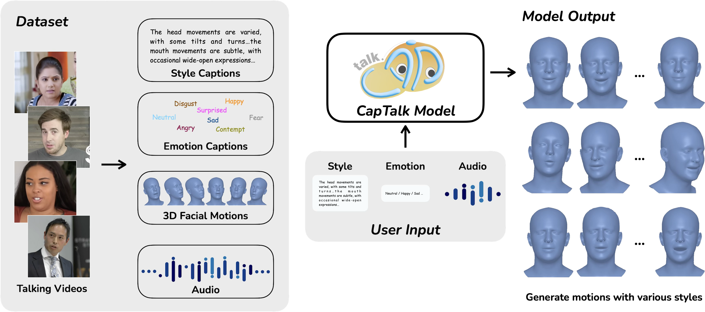

Audio-driven 3D facial animation aims to generate synchronized lip movements and expressive facial expressions from arbitrary audio inputs. However, existing methods typically rely on predefined identity or style latent features, restricting users' ability to flexibly control speaking styles. Moreover, applying a fixed style or identity throughout an entire audio segment often leads to facial animations that fail to adapt to the dynamic emotional content of speech. To overcome these limitations, we revisit the definition of speaking style and construct a large-scale dataset annotated with textual descriptions of both style and emotion. Building on this, we propose a novel talking head generation framework that enables fine-grained control over both speaking style and character emotion. Our model accepts textual descriptions of style and emotion alongside the driving audio, allowing real-time generation of highly synchronized lip movements and facial expressions that faithfully reflect the provided descriptions. Furthermore, our approach supports dynamic style and emotion control during inference, enabling the generation of facial animations that adapt to changing emotions within a single utterance. Experimental results demonstrate that our method achieves superior expressiveness and controllability compared to existing approaches.

CapTalk generates 3D head motions from audio and text captions, enabling the real-time synthesis of realistic and stylized animation sequences. To achieve this, we constructed a new dataset with style and emotion captions.
Given the same audio input, CapTalk generates distinct head motions conditioned on different text captions. Each example below shows the generated result together with the style and emotion captions used as input.
"The head movements are subtle, with occasional nods and slight tilts. The mouth movements are natural and expressive, indicating active speech. The facial expressions are neutral to slightly animated, suggesting a conversational tone."
"The person in the video appears to be speaking with a positive emotional tone. The head movements are varied, with the person turning their head to the side and then back to the camera, indicating a change in direction or focus. The mouth movements are expressive, with the person opening their mouth wide, suggesting emphasis or a strong point being made. The speaking style seems to be natural and conversational."
"The person in the video appears to be speaking with a neutral to slightly serious emotional tone. The head movements are varied, with some moments of nodding and others where the head is tilted slightly. The speaking style is natural, with clear articulation and a moderate pace. The mouth movements are subtle, indicating a controlled and deliberate speech pattern."
"The person in the video appears to be speaking with a serious and focused expression. Their head movements are moderate, indicating they are actively engaged in their speech. The mouth movements are subtle, suggesting a controlled and deliberate speaking style. The emotional tone seems to be serious and professional, appropriate for a formal setting like the World Economic Forum. The overall expression is one of confidence and authority."
Comparison against baseline methods on generation with dynamic head pose. CapTalk produces more natural head movements and lip synchronization.
@inproceedings{chu2026captalk,
title = {{CapTalk}: Text-Guided Stylization and Speech-Driven 3D Head Animation},
author = {Chu, Xuangeng and Gan, Yuan and Cui, Ziteng and Liu, Shuhong and Wang, Jian and Zhou, Bing and Harada, Tatsuya},
booktitle = {International Conference on Learning Representations (ICLR)},
year = {2026}
}